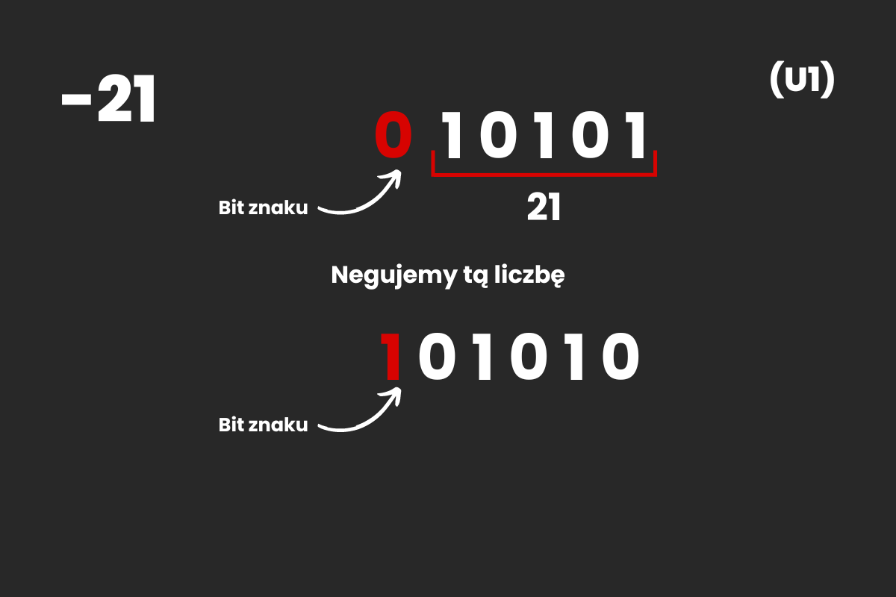
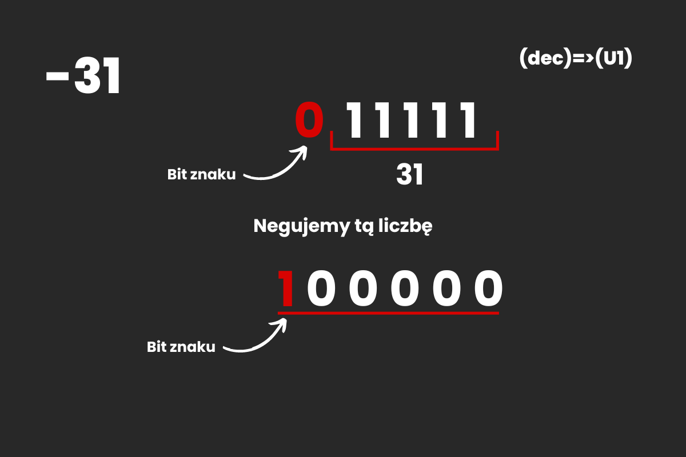
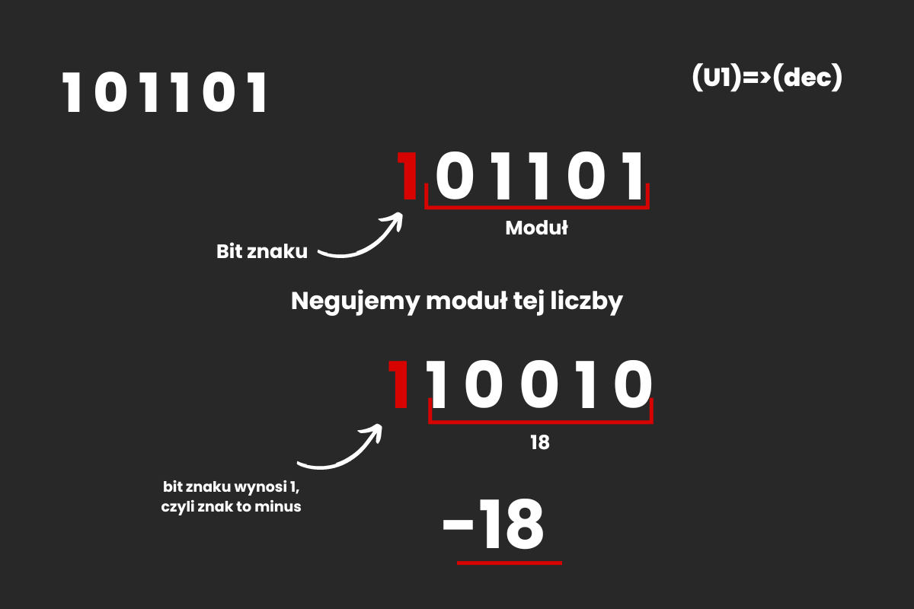

Zapis Uzupełnienie do jednego (U1) - System ZM sprawiał kilka problemów, m.in. przy operacjach artmetycznych. Drugim podejściem do tego problemu jest zapis U1. Każdy bit ma swoje wagi (w sys. ZM bit znaku nie miał wagi). Tak samo jak w zapisie ZM pierwszy bit od lewej jest bitem znaku, który dla 0 oznacza liczbę dodatnią, a dla 1 ujemną.
Zapis U1 liczby -21
Żeby otrzymać liczbę -21 w zapisie U1 negujemy tą liczbę zapisaną w sys. dwójkowym wraz z dodanym z lewej bitem znaku. Po negacji bit znaku powinien wynosić 1, jeśli liczba jest ujemna, 0 jeśli jest dodatnia.
W tym systemie nie ma już problemów z operacjami matematycznymi, jednak nadal jest problem z zerami. Istnieje 0 mające wszystkie bity równe zero, oraz -0 mające wszystkie bity równe 1.
Przykład
Zapisz liczbę -31 (10) w systemie U1
Zapisujemy moduł liczby -31(10) w systemie binarnym. Do otrzymanego wyniku dopisujemy 0 z lewej. Następnie negujemy tą liczbę, dzięki czemu otrzymujemy wynik: 100000 (U1)
Przykład
Zapisz liczbę 101101 (U1) w systemie dziesiętnym
Wiemy, że w zapisie U1 pierwszy bit od lewej, to bit znaku. W tym przykładzie wynosi on 1, czyli liczba jest ujemna. Oddzielamy bit znaku od modułu, następnie negujemy moduł. Wartość modułu konwertujemy do systemu dziesiętnego, zapisujemy minus z lewej, dzięki czemu uzyskaliśmy wynik: -18(10)